奥斯卡金像奖最佳动画短片奖《回忆积木小屋》
恍如世界末日一般，洪水席卷地球
世界变成一片汪洋，空旷而孤寂
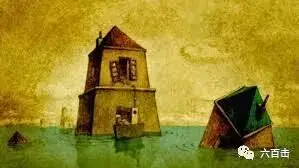
一位老人孤独地生活在这个世上
或凭栏远眺，或看看电视消磨时光
几无可以交流之人
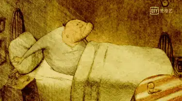
水位不断上涨
老人只能不断加盖房子
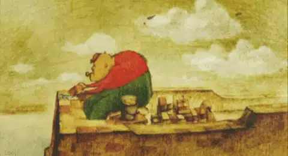
宛如摞积木一般
房子有如矗立在深海中的巨塔
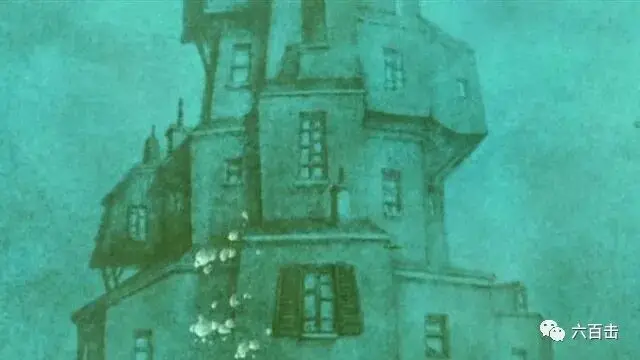
在搬运家具时
老人的烟斗不慎掉落水中
更顺着层与层之间的通道掉落下去
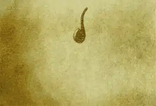
烟斗有着他和老伴共同的回忆
老人决心潜水取回烟斗
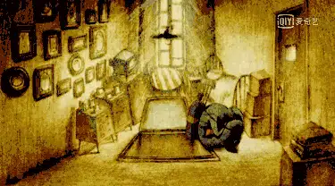
但是这一举动似乎打开了记忆的闸门
往日的回忆不断涌现
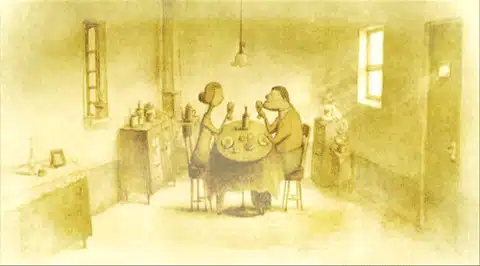
老人无法自已，一层层向下沉去
寻找那些早已沉在海底的珍贵记忆
……

这部短片只用12分钟
却能够唤起每个人藏匿于内心深处的情感
时间在短片中被物化成海水
不论你曾经多么踌躇满志
不论你曾经拥有多么幸福的家庭
海水会像时间一样将一切淹没
你只能不断向上建造房屋
直到你的“城堡”完全被时间的海水淹没
你的一生就此结束
这是短片中悲伤的来源
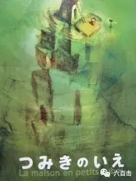
但是短片用回忆为孤独注入了暖意
回忆在短片中
被形象化
用老人慢慢潜入海水深处
来表现回忆由潜入深、由近到远
回忆成为了具象的“空间”
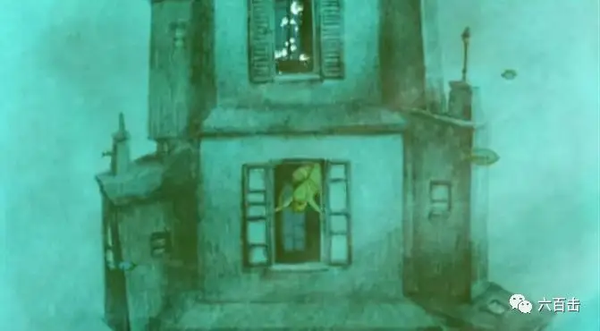
行走在这个“空间”并不是冰冷的
而是有温度的
是温暖的棕黄色
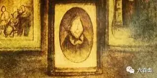
在这个“空间”里
老人遇到了过去
遇到了逝去的老伴
看到了自己的女儿和女婿
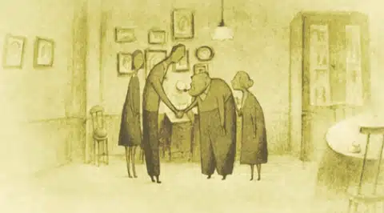
时间开始逐步倒流
刚刚出生的宝贝女儿第一次学会走路
他和美丽的妻子步入婚姻的殿堂
他在树下和妻子坠入爱河
......
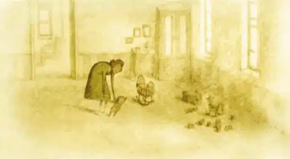
上帝赐给人类宝贵的情感
我们因思念而充满力量
祝每一个父亲
节日快乐
这里没有挑逗你眼目情欲的小鲜肉
也没有挑动你肉体情欲的段子
更没有膨胀你今生骄傲的鸡血
我们只在乎那些最质朴真诚的作品
在那里我们才能恢复真正的想象力
我们也坚信这才是我们真正需要的

ID:Six_hundred_hits
长按二维码，一键关注
【六百击】
电影评论
尽情分享朋友圈

微信二维码打赏通道